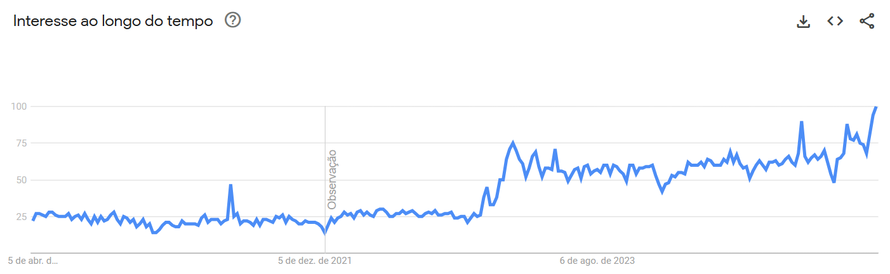
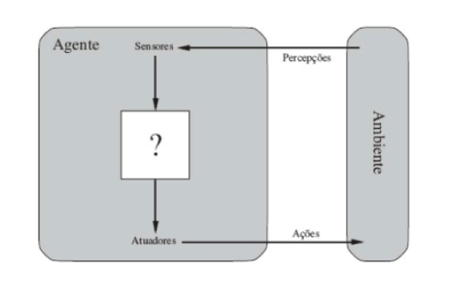
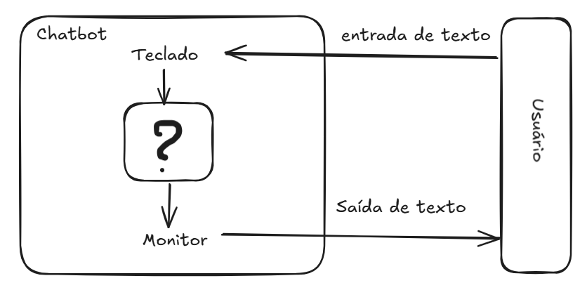
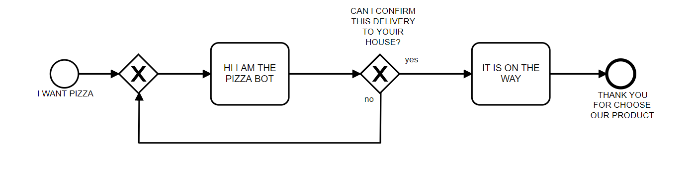
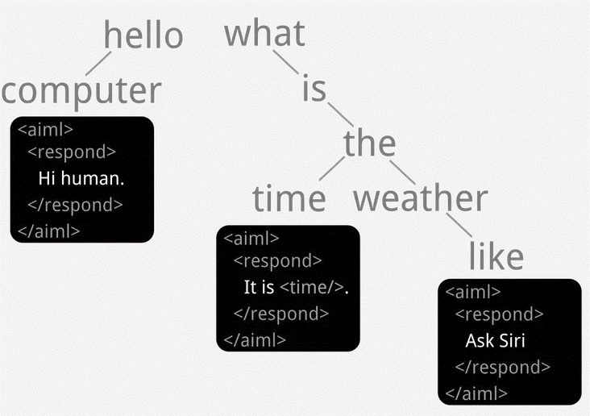

Chatbots: Definições e Contexto
Introdução
Um chatbot é um programa de computador que simula uma conversa humana, geralmente utilizando texto ou áudio. Eles oferecem respostas diretas a perguntas e auxiliam em diversas tarefas, servindo tanto para conversas gerais quanto para ações específicas, como abrir uma conta bancária.
Embora o chatbot ELIZA (Weizenbaum 1966) seja frequentemente considerado um dos primeiros exemplos de software conversacional, o termo “chatbot” ainda não era utilizado na época de sua criação. O termo “chatterbot”, sinônimo de “chatbot”, foi popularizado por Michael Mauldin em 1994, ao descrever seu programa JULIA (Mauldin 1994). Publicações acadêmicas, como os anais da Virtual Worlds and Simulation Conference de 1998 (Jacobstein et al. 1998), também ajudaram a consolidar o uso do termo.
O ELIZA, criado em 1966 por Joseph Weizenbaum, representou um experimento revolucionário na interação humano-computador (Weizenbaum 1966). Seu roteiro (ou script) mais famoso, DOCTOR, imitava rudimentarmente um psicoterapeuta, utilizando correspondência de padrões simples. Por exemplo, quando um usuário inseria a frase “Estou triste”, o ELIZA respondia “Por que você está triste hoje?”, reformulando a entrada como uma pergunta. Seu funcionamento baseia-se em um conjunto de regras que lhe permitem analisar e compreender a linguagem humana de forma limitada e aproximada.
Esse tipo de aplicação do ELIZA (simular um psicólogo muito rudimentar da técnica rogeriana) adequou-se bem a esse domínio, pois dependia de pouco conhecimento sobre o ambiente externo; as regras no script DOCTOR permitiam que o programa respondesse ao usuário com outras perguntas ou simplesmente refletisse a afirmação original. O ELIZA não possuía uma real “compreensão” da linguagem humana; ele apenas utilizava palavras-chave e manipulava frases para que a interação parecesse natural. Uma descrição detalhada do funcionamento do ELIZA, com exemplos em Python, será apresentada em seções posteriores deste livro.
Outro chatbot famoso é o ChatGPT. Desenvolvido pela OpenAI, este é um modelo de linguagem capaz de gerar texto muito semelhante ao criado por humanos. Ele utiliza aprendizagem profunda (deep learning) e redes neurais para gerar sentenças e parágrafos com base nas entradas e informações fornecidas. É capaz de produzir textos coerentes e até mesmo realizar tarefas simples, como responder a perguntas e gerar ideias. Contudo, é importante lembrar que o ChatGPT não possui consciência nem a capacidade de compreender contexto ou emoções. Ele é um exemplo de Modelo de Linguagem Grande (Large Language Model - LLM), baseado na arquitetura conhecida como Transformers, introduzida em 2017 (Vaswani et al. 2017). Esses modelos são treinados com terabytes de texto, utilizando mecanismos de autoatenção que avaliam a relevância de cada palavra em uma frase. Ao contrário das regras manuais do ELIZA, os LLMs extraem padrões linguísticos a partir da vasta quantidade de dados com que a rede neural foi treinada.
Esses dois chatbots, ELIZA e ChatGPT, são bons representantes do tipo conversacional. Apesar de terem surgido com décadas de diferença — ELIZA em 1966 e ChatGPT em 2022 — e de diferirem bastante na forma como geram suas respostas, ambos compartilham semelhanças em seu objetivo: conversar sobre determinado assunto ou responder perguntas, mantendo o usuário em um diálogo fluido quando necessário. Chatbots com essas características podem ser agrupados, de acordo com o objetivo, como chatbots conversacionais e são utilizados para interagir sobre assuntos gerais.
Outro tipo de chatbot classificado em relação ao objetivo é o orientado a tarefas. Os chatbots orientados a tarefas executam ações específicas, como abrir uma conta bancária ou pedir uma pizza. Geralmente, as empresas disponibilizam chatbots orientados a tarefas para seus usuários, com regras de negócio embutidas na conversação e com fluxos bem definidos. Normalmente, não se espera pedir uma pizza e, no mesmo chatbot, discutir os estudos sobre Ética do filósofo Immanuel Kant (embora talvez haja quem queira).
Essas duas classificações - conversacional e orientado a tarefas - (Figura 1.1) ainda não são suficientes para uma completa classifição dada diversas caractéristicas e enorme quantidade de chatbots existentes. Existem outras classificações que serão discutidas em seções posteriores.
A popularidade dos chatbots tem crescido significativamente em diversos domínios de aplicação (Marcondes, Almeida, and Novais 2020; Klopfenstein et al. 2017; Sharma, Verma, and Sahni 2020). Essa tendência é corroborada pelo aumento do interesse de busca pelo termo “chatbots”, conforme análise de dados do Google Trends no período entre 2020 e 2025 (Figura 1.2). Nesta figura, os valores representam o interesse relativo de busca ao longo do tempo, onde 100 indica o pico de popularidade no período analisado e 0 (ou a ausência de dados) indica interesse mínimo ou dados insuficientes.
 Fonte: Google Trends acesso em 05/04/2025
Chatbots e Agentes: Definições e Distinções
Define-se chatbot como um programa computacional projetado para interagir com usuários por meio de linguagem natural. Por outro lado, o conceito de agente possui uma definição mais ampla: trata-se de uma entidade computacional que percebe seu ambiente por meio de sensores e atua sobre esse ambiente por meio de atuadores (Russel and Norving 2013). A Figura 1.3 ilustra uma arquitetura conceitual de alto nível para um agente.

Fonte: Diretamente retirado de
Nesse contexto, um chatbot (Figura 1.4) pode ser considerado uma instanciação específica de um agente, cujo propósito primário é a interação conversacional em linguagem natural.

Com o advento de modelos de linguagem avançados, como os baseados na arquitetura Generative Pre-trained Transformer (GPT), a exemplo do ChatGPT, observou-se uma recontextualização do termo “agente” no domínio dos sistemas conversacionais. Nessa abordagem mais recente, um sistema focado predominantemente na geração de texto conversacional tende a ser denominado “chatbot”. Em contraste, o termo “agente” é frequentemente reservado para sistemas que, além da capacidade conversacional, integram e utilizam ferramentas externas (por exemplo, acesso à internet, execução de código, interação com APIs) para realizar tarefas complexas e interagir proativamente com o ambiente digital. Um sistema capaz de realizar uma compra online, processar um pagamento e confirmar um endereço de entrega por meio do navegador do usuário seria, portanto, classificado como um agente, diferentemente de chatbots mais simples como ELIZA, ou mesmo versões mais simples do chatGPT (GPT-2), cujo foco era estritamente o diálogo.
Gerenciamento do Diálogo e Fluxo Conversacional
Um chatbot responde a uma entrada do usuário. Porém, essa interação textual mediada por chatbots não se constitui em uma mera justaposição aleatória de turnos de conversação ou pares isolados de estímulo-resposta. Pelo contrário, espera-se que a conversação exiba coerência e mantenha relações lógicas e semânticas entre os turnos consecutivos. O estudo da estrutura e organização da conversa humana é abordado por disciplinas como a Análise da Conversação.
No contexto da da análise da conversação em língua portuguesa, os trabalhos de Marcuschi (Marcuschi 1986) são relevantes ao investigar a organização dessa conversação. Marcuschi analisou a estrutura conversacional em termos de unidades coesas, como o “tópico conversacional”, que agrupa turnos relacionados a um mesmo assunto ou propósito interacional.
Conceitos oriundos da Análise da Conversação, como a gestão de tópicos, têm sido aplicados no desenvolvimento de chatbots para aprimorar sua capacidade de manter diálogos coerentes e contextualmente relevantes com usuários humanos (Neves and Barros 2005).
Na prática de desenvolvimento de sistemas conversacionais, a estrutura lógica e sequencial da interação é frequentemente modelada e referida como “fluxo de conversação” ou “fluxo de diálogo”. Contudo, é importante ressaltar que a implementação explícita de modelos sofisticados de gerenciamento de diálogo, inspirados na Análise da Conversação, não é uma característica universal de todos os chatbots, variando conforme a complexidade e o propósito do sistema.
Um exemplo esquemático de um fluxo conversacional é apresentado na Figura 1.5. Nesta figura o fluxo de conversação inicia quando o usuário entra com o texto: I WANT PIZZA, o chatbot responde com uma pergunta: HI I AM THE PIZZA BOT. CAN I CONFIRM THIS DELIVERY TO YOUR HOUSE?. O usuário então pode responder: SIM e o chatbot finaliza a conversa com: IT’S ON THE WAY. THANK YOU FOR CHOOSE OUR PRODUCT. Caso o usuário responda: NO, o chatbot responde com a pergunta original: HI I AM THE PIZZA BOT. CAN I CONFIRM THIS DELIVERY TO YOUR HOUSE?. O fluxo de conversação continua até que o usuário responda com um “sim” para a pergunta inicial. Essa estrutura de perguntas e respostas é comum em chatbots orientados a tarefas, onde o objetivo é guiar o usuário por um processo específico, como fazer um pedido de pizza.

Um outro tipo de fluxo para um chatbot que vende roupas está representada na Figura 1.6.
Retirado de .
Depois do ELIZA
Um marco significativo na evolução dos chatbots foi o ALICE, que introduziu a Artificial Intelligence Markup Language (AIML), uma linguagem de marcação baseada em XML (Richard S. Wallace 2000). A AIML estabeleceu um paradigma para a construção de agentes conversacionais ao empregar algoritmos de correspondência de padrões. Essa abordagem utiliza modelos pré-definidos para mapear as entradas do usuário a respostas correspondentes, permitindo a definição modular de blocos de conhecimento (Richard S. Wallace 2000).
No contexto brasileiro, um dos primeiros chatbots documentados capaz de interagir em português, inspirado no modelo ELIZA, foi o Cybele (PRIMO and COELHO 2001). Posteriormente, foi desenvolvido o Elecktra, também em língua portuguesa, com aplicação voltada para a educação a distância (Leonhardt, Neisse, and Tarouco 2003). Em um exemplo mais recente de aplicação governamental, no ano de 2019, o processo de inscrição para o Exame Nacional do Ensino Médio (ENEM) foi disponibilizado por meio de uma interface conversacional baseada em chatbot (Figura 1.7).
Fonte: Captura de tela realizada por Giseldo Neo.
O desenvolvimento de chatbots avançados tem atraído investimentos de grandes corporações. Notavelmente, a IBM desenvolveu um sistema de resposta a perguntas em domínio aberto utilizando sua plataforma Watson (Ferrucci 2012). Esse tipo de tarefa representa um desafio computacional e de inteligência artificial (IA) considerável. Em 2011, o sistema baseado em Watson demonstrou sua capacidade ao competir e vencer competidores humanos no programa de perguntas e respostas JEOPARDY! (Ferrucci 2012).
Diversos outros chatbots foram desenvolvidos para atender a demandas específicas em variados domínios. Exemplos incluem: BUTI, um companheiro virtual com computação afetiva para auxiliar na manutenção da saúde cardiovascular (Junior 2008); EduBot, um agente conversacional projetado para a criação e desenvolvimento de ontologias com lógica de descrição (Lima 2017); PMKLE, um ambiente inteligente de aprendizado focado na educação em gerenciamento de projetos (Torreao 2005); RENAN, um sistema de diálogo inteligente fundamentado em lógica de descrição (Azevedo 2015); e MOrFEu, voltado para a mediação de atividades cooperativas em ambientes inteligentes na Web (Bada 2012).
Entre os chatbots baseado em LLMs de destaque atualmente estão o Qwen, desenvolvido pela Alibaba, que se destaca por sua eficiência e suporte multilíngue; o DeepSeek, de código aberto voltado para pesquisa e aplicações empresariais com foco em precisão e escalabilidade; o Maritaca, modelo brasileiro de otimizado para o português; o Gemini, da Google, que integra capacidades multimodais e forte desempenho em tarefas diversas; o Mixtral, da Mistral AI, que utiliza arquitetura de mistura de especialistas para maior eficiência; o Llama, da Meta, reconhecido por ser código aberto e ampla adoção na comunidade; o Claude, da Anthropic, projetado com ênfase em segurança, alinhamento ético que vem ganhando adeptos para tarefas e codificação; e o Nemotron, da NVIDIA, que oferece modelos de linguagem otimizados para execução em GPUs e aplicações empresariais de alto desempenho.
Abordagens
Desde o pioneirismo do ELIZA, múltiplas abordagens e técnicas foram exploradas para o desenvolvimento de chatbots. Entre as mais relevantes, destacam-se: AIML com correspondência de padrões (pattern matching), análise sintática (Parsing), modelos de cadeia de Markov (Markov Chain Models), uso de ontologias, redes neurais recorrentes (RNNs), redes de memória de longo prazo (LSTMs), modelos neurais sequência-a-sequência (Sequence-to-Sequence), aprendizado adversarial para geração de diálogo, além de abordagens baseadas em recuperação (Retrieval-Based) e generativas (Generative-Based) (Borah, Pathak, and Sarmah 2019; Ramesh et al. 2017; Shaikh et al. 2016; Abdul-Kader and Woods 2015; Li et al. 2018), entre outras.
Além disso, diversos frameworks têm sido desenvolvidos para facilitar a criação desses agentes complexos, como CrewAI e bibliotecas associadas a plataformas como Hugging Face (e.g., Transformers Agents), que fornecem abstrações e ferramentas em Python para orquestrar múltiplos componentes e o uso de ferramentas externas.
Problemática
Apesar do progresso recente de chatbots, como o ChatGPT, o mecanismo fundamental da inteligência em nível humano, frequentemente refletido na comunicação, ainda não está totalmente esclarecido (Shum, He, and Li 2018). Para avançar na solução desses desafios, serão necessários progressos em diversas áreas da IA cognitiva, tais como: modelagem empática de conversas, modelagem de conhecimento e memória, inteligência de máquina interpretável e controlável, e calibração de recompensas emocionais (Shum, He, and Li 2018).
Uma das dificuldades na construção de chatbots do tipo orientado a tarefas reside em gerenciar a complexidade das estruturas condicionais ("se-então") que definem o fluxo do diálogo (Raj 2019). Quanto maior o número de decisões a serem tomadas, mais numerosas e intrincadas tendem a ser essas estruturas condicionais. Contudo, elas são essenciais para codificar fluxos de conversação complexos. Se a tarefa que o chatbot visa simular é inerentemente complexa e envolve múltiplas condições, o código precisará refletir essa complexidade. Para facilitar a visualização desses fluxos, uma solução eficaz é a utilização de fluxogramas. Embora simples de criar e entender, os fluxogramas constituem uma poderosa ferramenta de representação para este problema.
Os chatbots baseados em AIML apresentam desvantagens específicas. Por exemplo, o conhecimento é representado como instâncias de arquivos AIML. Se esse conhecimento for criado com base em dados coletados da Internet, ele não será atualizado automaticamente, exigindo atualizações periódicas manuais (Madhumitha, Keerthana, and Hemalatha 2015). No entanto, já existem abordagens para mitigar essa limitação, permitindo carregar conteúdo AIML a partir de fontes como arquivos XML (Macedo and Fusco 2014), um corpus textual (De Gasperis, Chiari, and Florio 2013) ou dados do Twitter (Yamaguchi, Mozgovoy, and Danielewicz-Betz 2018).
Outra desvantagem do AIML, a exemplo do Eliza, reside na relativa complexidade de seus padrões de correspondência (patterns). Além disso, a manutenção do sistema pode ser árdua, pois, embora a inserção de conteúdo (categorias) seja conceitualmente simples, grandes volumes de informação frequentemente precisam ser adicionados manualmente (Madhumitha, Keerthana, and Hemalatha 2015).
Especificamente no caso do AIML, a construção e a visualização de fluxos de diálogo complexos enfrentam dificuldades adicionais. Devido ao seu formato baseado em texto, muitas vezes é difícil perceber claramente como as diferentes categorias (unidades de conhecimento e resposta) se interligam para formar a estrutura da conversação.
Eliza Explicado
Introdução
o ELIZA foi um dos primeiros programas de processamento de linguagem natural e foi apresentado em 1966 por Joseph Weizenbaum no MIT (Weizenbaum 1966).
O conjunto de padrões e respostas predefinidas constitui o que Weizenbaum chamou de “roteiro” (ou script) de conversa. O mecanismo do ELIZA separa o motor genérico de processamento (o algoritmo de busca de palavras-chave e aplicação de regras) dos dados do script em si. Isso significa que ELIZA podia em teoria simular diferentes personalidades ou tópicos apenas carregando um script diferente, sem alterar o código do programa (veja na Figura 2.1). Também foi codificado um editor de texto para as alterações do próprio Script.
Um destes scripts (o DOCTOR) o deixou famoso. Com este script carregado, o ELIZA simulava precariamente um psicoterapeuta (do estilo Rogeriano), refletindo as palavras do usuário de volta em forma de pergunta. A primeira linha do script é a introdução do chatbot, a primeira palavra que ele escrever para o usuário. START é um comando técnico do script, serve para indicar que a seguir virão as regras. REMEMBER 5 estabelece que a prioridade da palavra REMEMBER é 5, ou seja, se o usuário disser algo que contenha a palavra REMEMBER, o ELIZA irá responder com uma das perguntas definidas entre parênteses. A seguir estão as regras de transformação de frases (decomposition rule e reassembly rule) associadas à palavra-chave REMEMBER. O exemplo abaixo mostra um trecho do script DOCTOR:
(REMEMBER 5
(
(0 YOU REMEMBER 0)
(DO YOU OFTEN THINK OF 4)
(DOES THINKING OF ~ BRING ANYTHING ELSE TO MINO)
(WHAT ELSE OO YOU REMEMBER)
(WHY DO YOU REMEMBER 4 JUST NOW)
(WHAT IN THE PRESENT SITUATION REMINDS YOU OF 4)
(WHAT IS THE CONNECTION BETWEEN ME AND 4)
)
(
(0 DO I REMEMBER 0)
(DID YOU THINK I WOULD FORGET 5)
(WHY DO YOU THINK I SHOULD RECALL 5 NOW)
(WHAT ABOUT 5)
(=WHAT)
(YOU MENTIONED S)
)
)
(IF 3
(
(0 IF 0)
(DO YOU THINK ITS LIKELY THAT 3)
(DO YOU WISH THAT 3)
(WHAT DO YOU THINK ABOUT 3)
(REALLY, 2 3)
)
)
A seguir é apresentado um exemplo de diálogo (retirado do artigo original) entre um usuário humano e ELIZA, mostrando as respostas em letras maiúsculas. Nesse exemplo, o usuário faz afirmações pessoais (“Men are all alike.”, “Well, my boyfriend made me come here.”) e ELIZA responde com perguntas ou reformulações (“IN WHAT WAY”, “YOUR BOYFRIEND MADE YOU COME HERE?”), reutilizando termos do próprio usuário. Esse estilo reflexivo encoraja o usuário a continuar falando sem fornecer respostas diretas.
Men are all alike.
IN WHAT WAY
They're always bugging us about something or other.
CAN YOU THINK OF A SPECIFIC EXAMPLE
Well, my boyfriend made me come here.
YOUR BOYFRIEND MADE YOU COME HERE
He says I'm depressed much of the time.
I AM SORRY TO HEAR YOU ARE DEPRESSED
It's true. I am unhappy.
DO YOU THINK COMING HERE WILL HELP YOU NOT TO BE UNHAPPY
I need some help, that much seems certain.
WHAT WOULD IT MEAN TO YOU IF YOU GOT SOME HELP
Perhaps I could learn to get along with my mother.
TELL ME MORE ABOUT YOUR FAMILY
My mother takes care of me.
WHO ELSE IN YOUR FAMILY TAKES CARE OF YOU
My father.
YOUR FATHER
You are like my father in some ways.
WHAT RESEMBLANCE DO YOU SEE
You are not very aggressive but I think you don't want me to
notice that.
WHAT MAKES YOU THINK I AM NOT VERY AGGRESSIVE
You don't argue with me.
WHY DO YOU THINK I DON'T ARGUE WITH YOU
You are afraid of me.
DOES IT PLEASE YOU TO BELIEVE I AM AFRAID OF YOU
My father is afraid of everybody.
WHAT ELSE COMES TO MIND WHEN YOU THINK OF YOUR FATHER
Bullies.
DOES THAT HAVE ANYTHING TO DO WITH THE FACT THAT YOUR BOYFRIEND MADE YOU COME HERE Processamento de Entradas e Palavras-Chave
O funcionamento do ELIZA baseia-se em correspondência de padrões por palavras-chave. Técnica também chamado casamento de padrão, em inglês pattner matching seu paradigma também se encaixa na técnica baseado em regras (ou rule-based). A cada turno, o texto de entrada do usuário é analisado em busca de palavras-chave predefinidas. O ELIZA fazia uma varredura da sentença da esquerda para a direita, identificando se alguma palavra correspondia a uma palavrachave do script. Caso encontrasse, ELIZA selecionava a palavra-chave mais “importante” (havia um peso de prioridade associado a cada palavra-chave) e ignorava o restante da entrada.
Por exemplo, o script DOCTOR, definia palavras-chave como “ALIKE” ou “SAME” com alta prioridade; assim, na frase “Men are all alike.” o programa detectava a palavra “ALIKE” e disparava uma resposta associada a ela (no caso: “In what way?”). Se múltiplas palavras-chave aparecessem, ELIZA escolhia aquela de maior peso para formular a resposta.
Primeiro o texto de entrada digitado pelo usuário era separado em palavras, em um técnica que hoje chamamos de tokenização de palavras. A palavra-chave era identificada, comparando-a sequencialmente até o fim das palavras existentes, ou até ser encontrado uma pontuação. Caso fosse encontrado uma pontuação (ponto final ou vírgula), o texto após a pontuação era ignorado se já tivesse sido identificado uma palavra-chave. Assim cada processamento da resposta foca em apenas uma única afirmação (ou frase) do usuário. Se várias palavras-chave fossem encontradas antes da pontuação, a de maior peso era selecionada.
Por exemplo, o usuário entra com o texto: “I am sick. but, today is raining”. Se houvesse uma palavra-chave no script rankeando a palavra “SICK" com alta prioridade, a entrada processada seria somente”I am sick”, o restante depois da pontuação (neste caso, o ponto) seria gnorado pelo programa.
Se nenhuma palavra-chave fosse encontrada na entrada, ELIZA recorria a frases genéricas programadas, chamadas de respostas vazias ou sem conteúdo. Nesses casos, o chatbot emitia mensagens do tipo “I see.” ou “Please, go on.” . Esse mecanismo evitava silêncio quando o usuário dizia algo fora do escopo do script.
Além disso, a implementação original incluía uma estrutura de memória: algumas declarações recentes do usuário eram armazenadas e, se uma entrada subsequente não contivesse novas keywords, ELIZA poderia recuperar um tópico anterior e introduzi-lo na conversa. Por exemplo, se o usuário mencionasse família em um momento e depois fizesse uma afirmação vaga, o programa poderia responder retomando o assunto da família (“DOES THAT HAVE ANYTHING TO DO WITH YOUR FAMILY?”). Essa estratégia dava uma pseudo-continuidade ao diálogo, simulando que o sistema “lembrava” de informações fornecidas anteriormente.
Regras de Transformação de Frases
Encontrada a palavra-chave, ELIZA aplicava uma regra de transformação associada a ela para gerar a resposta. As regras são definidas em pares: um padrão de análise (decomposition rule) e um modelo de reconstrução de frase (reassembly rule).
Primeiro, a frase do usuário é decomposta conforme um padrão que identifica a contexto mínimo em torno da palavra-chave. Essa decomposição frequentemente envolve separar a frase em partes e reconhecer pronomes ou estruturas gramaticais relevantes. Por exemplo, considere a entrada “You are very helpful.”. Uma regra de decomposição pode identificar a estrutura “You are X” — onde “X” representa o restante da frase — e extrair o complemento “very helpful” como um componente separado.
Em seguida, a regra de reassembly correspondente é aplicada, remontando uma sentença de resposta em que “X” é inserido em um template pré-definido. No exemplo dado, o template de resposta poderia ser “What makes you think I am X?”; ao inserir X = “very helpful”, gera-se “What makes you think I am very helpful?”. Observe que há uma inversão de pessoa: o pronome “you” do usuário foi trocado por “I” na resposta do bot.
De fato, uma parte importante das transformações do ELIZA envolve substituir pronomes (eu/você, meu/seu) para que a resposta faça sentido como uma frase do ponto de vista do computador falando com o usuário. Esse algoritmo de substituição é relativamente simples (por exemplo, “meu” → “seu”, “eu” → “você”, etc.), mas essencial para dar a impressão de entendimento gramatical.
Implementação Original e Variações Modernas
A implementação original de ELIZA foi feita em uma linguagem chamada MAD-SLIP (um dialecto de Lisp) rodando em um mainframe IBM 7094 no sistema CTSS do MIT. O código fonte do programa principal continha o mecanismo de correspondência, enquanto as regras de conversação (script DOCTOR) eram fornecidas separadamente em formato de listas associativas, similar a uma lista em Lisp. Infelizmente, Weizenbaum não publicou o código completo no artigo de 1966 (o que era comum na época), mas décadas depois o código em MAD-SLIP foi recuperado nos arquivos do MIT, comprovando os detalhes de implementação (Lane et al. 2025). De qualquer forma, a arquitetura descrita no artigo influenciou inúmeras reimplementações acadêmicas e didáticas nos anos seguintes.
Diversos entusiastas e pesquisadores reescreveram ELIZA em outras linguagens de programação, dada a simplicidade relativa de seu algoritmo. Ao longo dos anos surgiram versões em Lisp, PL/I, BASIC, Pascal, Prolog, Java, Python, OZ, JavaScript, entre muitas outras. Cada versão normalmente incluía o mesmo conjunto de regras do script terapeuta ou pequenas variações.
As ideias de ELIZA também inspiraram chatbots mais avançados. Poucos anos depois, em 1972, surgiu PARRY, escrito pelo psiquiatra Kenneth Colby, que simulava um paciente paranoico. PARRY tinha um modelo interno de estado emocional e atitudes, mas na camada de linguagem ainda usava muitas respostas baseadas em regras, chegando a “conversar” com o próprio ELIZA em experimentos da época.
Em 1995, Richard Wallace desenvolveu o chatbot ALICE (Artificial Linguistic Internet Computer Entity), que levava o paradigma de ELIZA a uma escala muito maior. ALICE utilizava um formato XML chamado AIML (Artificial Intelligence Markup Language) para definir milhares de categorias de padrões e respostas. Com mais de 16.000 templates mapeando entradas para saídas (Richard S. Wallace 2000), ALICE conseguia manter diálogos bem mais naturais e abrangentes que o ELIZA original, embora o princípio básico de correspondência de padrões permanecesse. Esse avanço rendeu a ALICE três vitórias no Prêmio Loebner (competição de chatbots) no início dos anos 2000 (Richard S. Wallace 2000).
Outras variações e sucessores notáveis incluem Jabberwacky (1988) – que já aprendia novas frases – e uma profusão de assistentes virtuais e bots de domínio específico nas décadas seguintes (Richard S. Wallace 2000). Em suma, o legado de ELIZA perdurou por meio de inúmeros chatbots baseados em regras, até a transição para abordagens estatísticas e de aprendizado de máquina no final do século XX.
Comparação com Modelos de Linguagem Modernos
A técnica de ELIZA, baseada em palavras-chave com respostas predefinidas, contrasta fortemente com os métodos de Large Language Models (LLMs) atuais, como o GPT-4, que utilizam redes neurais de milhões (ou trilhões) de parâmetros e mecanismos de atenção.
Mecanismo de Pesos: Palavras-Chave vs. Atenção Neural
No ELIZA, a “importância” de uma palavra era determinada manualmente pelo programador através de pesos ou rankings atribuídos a certas palavras-chave no script. Ou seja, o programa não aprendia quais termos focar – ele seguia uma lista fixa de gatilhos. Por exemplo, termos como “sempre” ou “igual” tinham prioridade alta no script DOCTOR para garantir respostas apropriadas.
Em contraste, modelos modernos como o GPT não possuem uma lista fixa de palavras importantes; em vez disso, eles utilizam o mecanismo de self-attention para calcular dinamicamente pesos entre todas as palavras da entrada conforme o contexto (Vaswani et al. 2017).
Na arquitetura Transformer, cada palavra (token) de entrada gera consultas e chaves que interagem com todas as outras, permitindo ao modelo atribuir pesos maiores às palavras mais relevantes daquela frase ou parágrafo (Vaswani et al. 2017). Em outras palavras, o modelo aprende sozinho quais termos ou sequências devem receber mais atenção para produzir a próxima palavra na resposta. Esse mecanismo de atenção captura dependências de longo alcance e nuances contextuais que um sistema de palavras-chave fixas como o ELIZA não consegue representar.
Além disso, o “vocabulário” efetivo de um LLM é imenso – um moddelo GPT pode ser treinado com trilhões de palavras e ter ajustado seus parâmetros para modelar estatisticamente a linguagem humana (Vaswani et al. 2017). Como resultado, pode-se dizer metaforicamente que os LLMs têm uma lista de “palavras-chave” milhões de vezes maior (na prática, distribuída em vetores contínuos) e um método bem mais sofisticado de calcular respostas do que o ELIZA.
Enquanto ELIZA dependia de coincidências exatas de termos para disparar regras, modelos como GPT avaliam similaridades semânticas e contexto histórico graças às representações densas (embeddings) aprendidas durante o treinamento de rede neural.
Contextualização e Geração de Linguagem
Devido à sua abordagem baseada em regras locais, o ELIZA tinha capacidade de contextualização muito limitada. Cada input do usuário era tratado quase isoladamente: o programa não construía uma representação acumulada da conversa, além de artifícios simples como repetir algo mencionado (a estrutura de memória) ou usar pronomes para manter a ilusão de continuidade. Se o usuário mudasse de tópico abruptamente, o ELIZA não “perceberia” – ele apenas buscaria a próxima palavra-chave disponível ou recorreria a frases genéricas.
Em contraste, modelos de linguagem modernos levam em conta um longo histórico de diálogo. Chatbots que usam GPT podem manter um contexto centenas ou milhares de tokens (palavras ou fragmentos) em sua janela de atenção, o que significa que eles conseguem referenciar informações mencionadas vários parágrafos atrás e integrá-las na resposta corrente. O mecanismo de self-attention, em particular, permite que o modelo incorpore relações contextuais complexas: cada palavra gerada pode considerar influências de palavras distantes no texto de entrada (Vaswani et al. 2017).
Por exemplo, ao conversar com um LLM, se você mencionar no início da conversa que tem um irmão chamado Alex e depois perguntar “ele pode me ajudar com o problema?”, o modelo entenderá que “ele” se refere ao Alex mencionado anteriormente (desde que dentro da janela de contexto). Já o ELIZA original não teria como fazer essa ligação, a menos que houvesse uma regra explícita para “ele” e algum armazenamento específico do nome – algo impraticável de antecipar via regras fixas para todos os casos.
Outra diferença crucial está na geração de linguagem. O ELIZA não gera texto original no sentido pleno: suas respostas são em grande parte frases prontas (ou templates fixos) embaralhadas com partes da fala do usuário. Assim, seu vocabulário e estilo são limitados pelo script escrito manualmente. Modelos GPT, por sua vez, geram respostas novas combinando probabilisticamente o conhecimento adquirido de um extenso corpus. Eles não se restringem a repetir trechos da entrada, podendo elaborar explicações, fazer analogias, criar perguntas inéditas – tudo coerente com os exemplos linguísticos em sua base de treinamento. Enquanto ELIZA tendia a responder com perguntas genéricas ou devolvendo as palavras do usuário, os LLMs podem produzir respostas informativas e detalhadas sobre o assunto (pois “aprenderam” uma ampla gama de tópicos durante o treinamento). Por exemplo, se perguntarmos algo factual ou complexo, o ELIZA falharia por não ter nenhuma regra a respeito, provavelmente dando uma resposta vazia. Já um modelo como GPT-4 tentará formular uma resposta baseada em padrões linguísticos aprendidos e em conhecimento implícito dos dados, muitas vezes fornecendo detalhes relevantes.
Em termos de fluência e variedade, os modelos modernos superam o ELIZA amplamente. O ELIZA frequentemente se repetia ou caía em loops verbais quando confrontado com inputs fora do roteiro – um limite claro de sistemas por regras estáticas. Os LLMs produzem linguagem muito mais natural e adaptável, a ponto de muitas vezes enganarem os usuários sobre estarem conversando com uma máquina (um efeito buscado desde o Teste de Turing). Ironicamente, ELIZA nos anos 60 já provocou um precursor desse fenômeno – o chamado Efeito ELIZA, em que pessoas atribuem compreensão ou sentimentos a respostas de computador que, na verdade, são superficiais. Hoje, em chatbots GPT, esse efeito se intensifica pela qualidade das respostas, mas a distinção fundamental permanece: ELIZA seguia scripts sem compreender, enquanto LLMs inferem padrões e significados de forma estatística, sem entendimento consciente, mas atingindo resultados que simulam compreensão de maneira muito mais convincente.
Em resumo, os avanços de arquitetura (especialmente o mecanismo de atenção) ampliaram drasticamente a capacidade de contextualização e geração dos chatbots modernos, marcando uma evolução significativa desde o mecanismo simples porém pioneiro de ELIZA.
Artificial Intelligence Markup Language (AIML)
O Artificial Intelligence Markup Language (AIML) é uma especificação baseada em XML, proposta por (Richard S. Wallace 2009), destinada à programação de agentes conversacionais, comumente denominados chatbots. A concepção da linguagem prioriza o minimalismo, característica que simplifica o processo de criação de bases de conhecimento por indivíduos sem experiência prévia em programação (Richard S. Wallace 2009). A arquitetura fundamental de um interpretador AIML genérico é ilustrada na Figura 3.1.
Adaptado de
A técnica central empregada pelo AIML é a correspondência de padrões (pattern matching). Este método é amplamente utilizado no desenvolvimento de chatbots, particularmente em sistemas orientados a perguntas e respostas (Abdul-Kader and Woods 2015). Uma das metas de projeto do AIML é possibilitar a fusão de bases de conhecimento de múltiplos chatbots especializados em domínios distintos. Teoricamente, um interpretador poderia agregar essas bases, eliminando automaticamente categorias redundantes para formar um chatbot mais abrangente (Richard S. Wallace 2000).
AIML é frequentemente associado aos chatbots de terceira geração (Maria et al. 2010) e estima-se sua adoção em mais de 50.000 implementações em diversos idiomas. Extensões da linguagem foram propostas, como o iAIML, que introduziu novas tags e incorporou o conceito de intenção com base nos princípios da Teoria da Análise da Conversação (TAC) (Neves and Barros 2005). Adicionalmente, ferramentas baseadas na Web foram desenvolvidas para apoiar a construção de bases de conhecimento AIML (Krassmann et al. 2017). Um exemplo proeminente é o chatbot ALICE, cuja implementação em AIML compreendia aproximadamente 16.000 categorias, cada uma potencialmente contendo múltiplas tags XML aninhadas (Richard S. Wallace 2000). Uma representação visual desta estrutura de conhecimento é apresentada na Figura 3.2.
Retirado de
(Richard S. Wallace 2000) estabeleceu analogias entre o funcionamento de interpretadores AIML e a teoria do Raciocínio Baseado em Casos (RBC). Nessa perspectiva, as categorias AIML funcionam como "casos", onde o algoritmo identifica o padrão que melhor se alinha à entrada do usuário. Cada categoria estabelece um vínculo direto entre um padrão de estímulo e um modelo de resposta. Consequentemente, chatbots AIML inserem-se na tradição da robótica minimalista, reativa ou de estímulo-resposta (Richard S. Wallace 2000), conforme esquematizado na Figura 3.3. Vale notar que a própria técnica de RBC já foi integrada a interpretadores AIML como um mecanismo para consultar fontes de dados externas e expandir a base de conhecimento do agente (Kraus and Fernandes 2008).
Retirado de
Os chatbots que utilizam AIML são classificados como sistemas "baseados em recuperação" (retrieval-based). Tais modelos operam a partir de um repositório de respostas predefinidas, selecionando a mais apropriada com base na entrada do usuário e no contexto conversacional, guiando assim o fluxo da interação. Esta abordagem é frequentemente empregada na construção de chatbots destinados a operar em domínios de conhecimento restritos (Borah, Pathak, and Sarmah 2019).
A Figura 3.4 demonstra a estrutura elementar de um arquivo AIML. A tag <category> encapsula a unidade básica de conhecimento. Internamente, a tag <pattern> define o padrão de entrada a ser reconhecido (no exemplo, o caractere curinga *, que corresponde a qualquer entrada), enquanto a tag <template> contém a resposta associada. No exemplo ilustrado, o chatbot responderia "Hello!" a qualquer interação. Uma visão abstrata da árvore de conhecimento resultante pode ser observada na Figura 3.5. O AIML padrão suporta transições baseadas primariamente em correspondência de padrões, uma limitação inerente, embora extensões específicas de interpretadores possam permitir a integração de outras técnicas de processamento.
<aiml>
<category>
<pattern>*</pattern>
<template>Hello!</template>
</category>
</aimlRetirado de

Retirado de https://www.pandorabots.com/docs/aiml-fundamentals/
O profissional responsável pela criação, manutenção e curadoria da base de conhecimento de um chatbot AIML é denominado botmaster (Richard S. Wallace 2000). Suas atribuições englobam a edição da base (frequentemente via ferramentas auxiliares), a análise de logs de diálogo para identificar padrões de interação e a subsequente criação ou refino de respostas. Este papel pode ser exercido por indivíduos com diferentes perfis, incluindo webmasters, desenvolvedores, redatores, engenheiros ou outros interessados na construção de chatbots (Richard S. Wallace 2000).
Algumas implementações de interpretadores AIML podem incorporar capacidades rudimentares de compreensão semântica através do Resource Description Framework (RDF)1. O RDF é um padrão W3C para representação de informações na Web, usualmente por meio de triplas (sujeito-predicado-objeto) que descrevem relações entre entidades. No contexto AIML, RDF pode ser utilizado para armazenar e consultar fatos. Contudo, mesmo com tais adições, as capacidades linguísticas permanecem aquém da complexidade e do potencial gerativo da linguagem humana, conforme descrito por (Chomsky and Lightfoot 2002).
Embora (Höhn 2019) argumente que o AIML padrão carece de um conceito explícito de "intenção" (intent), similar ao encontrado em plataformas de Natural Language Understanding (NLU), é possível emular o reconhecimento de intenções. Isso é tipicamente alcançado definindo categorias que representam "formas canônicas" ou "padrões atômicos" para uma intenção específica2. Variações de entrada (e.g., "oi", "olá") podem ser mapeadas para uma categoria canônica (e.g., "saudação") usando a tag <srai> (Symbolic Reduction Artificial Intelligence), que redireciona o fluxo de processamento (ver Figura 3.6). Dessa forma, um chatbot AIML pode gerenciar intenções distintas dentro de seu domínio, como realizar um pedido ou verificar o status de entrega.
Retirado de
<srai>
chatbots baseados em AIML têm obtido sucesso significativo em competições como o Prêmio Loebner. Notavelmente, o chatbot Mitsuku3, desenvolvido por Steve Worswick, conquistou múltiplos títulos recentes4, seguindo vitórias anteriores do ALICE. (Richard S. Wallace 2000).
Adicionalmente, Mitsuku foi classificado em primeiro lugar numa análise comparativa envolvendo oito chatbots (Sharma, Verma, and Sahni 2020). Nesse estudo, que avaliou atributos conversacionais com base em um conjunto padronizado de perguntas, o Google Assistant obteve a segunda posição, seguido pela Siri em terceiro. O chatbot ALICE. alcançou a quarta posição, enquanto o ELIZA ficou na última colocação entre os sistemas comparados (Sharma, Verma, and Sahni 2020).
Processamento de Linguagem Natural
O Processamento de Linguagem Natural (PLN) é um campo intrinsecamente ligado à inteligência artificial, dedicando-se a equipar computadores com a capacidade de analisar e compreender a linguagem humana. No cenário da construção de chatbots, o PLN emerge como um componente fundamental, atuando como o "cérebro" da aplicação conversacional. Sua função primordial reside em processar a entrada bruta do usuário, realizando a limpeza e a preparação dos dados textuais para que o sistema possa interpretar a mensagem e tomar as ações subsequentes apropriadas.
Em um espectro mais amplo, o PLN engloba uma vasta gama de tarefas que transcendem a interação com chatbots. Ele se nutre de conceitos e metodologias provenientes da ciência da computação, da linguística, da matemática, da própria inteligência artificial, do aprendizado de máquina e da psicologia. O objetivo central do PLN é, portanto, manipular e analisar a linguagem natural, seja em sua forma escrita ou falada, com o intuito de concretizar tarefas específicas e úteis. Este processo multifacetado envolve a decomposição da linguagem em unidades menores, a compreensão do seu significado intrínseco e a determinação da resposta ou ação mais adequada.
Entendimento de Linguagem Natural (ULN) como Subconjunto do PLN
O Entendimento de Linguagem Natural (ULN) é apresentado nas fontes como um subdomínio específico dentro do universo mais vasto do PLN. Enquanto o PLN abarca um conjunto diversificado de operações sobre a linguagem, o ULN se concentra de maneira particular na habilidade da máquina de apreender e interpretar a linguagem natural tal como ela é comunicada pelos seres humanos. Em outras palavras, o ULN é o ramo do PLN dedicado à extração de significado e à identificação da intenção por trás do texto inserido pelo usuário. As aplicações do ULN são extensas e incluem funcionalidades cruciais para chatbots, como a capacidade de responder a perguntas, realizar buscas em linguagem natural, identificar relações entre entidades, analisar o sentimento expresso no texto, sumarizar informações textuais e auxiliar em processos de descoberta legal.
Técnicas Fundamentais de PLN para Chatbots
A construção de chatbots eficazes repousa sobre o emprego de diversas técnicas de PLN, cada uma contribuindo para a capacidade do sistema de interagir de forma inteligente com os usuários. As fontes detalham algumas dessas técnicas essenciais:
Tokenização
Este é o processo inicial de segmentar um texto em unidades menores denominadas tokens, que podem ser palavras, pontuações ou símbolos. A tokenização é um passo preparatório fundamental para qualquer análise linguística subsequente.
Tokenizar não é só separar por espaços, mas também lidar com pontuações, contrações e outros aspectos que podem afetar a análise. Por exemplo, "não é" pode ser tokenizado como ["não", "é"] ou ["não", "é"], dependendo do contexto e da abordagem adotada.
Um exemplo simples seria a frase "Eu estou feliz.", que seria tokenizada em ["Eu", "estou", "feliz", "."]. Não necessariamente uma palavra equivale a um token. Em alguns casos, como em palavras compostas ou expressões idiomáticas, um único token pode representar uma ideia ou conceito mais amplo. Por exemplo, "São Paulo" poderia ser considerado um único token em vez de dois ("São" e "Paulo").
Existem diferentes abordagens para tokenização, incluindo tokenização baseada em regras, onde padrões específicos são definidos para identificar tokens (geralmente utilizando expressão regular), e tokenização baseada em aprendizado de máquina, onde algoritmos aprendem a segmentar o texto com base em exemplos anteriores.
A tokenização pode ser feita de várias maneiras, dependendo do idioma e do objetivo da análise. Em inglês, por exemplo, a tokenização pode ser mais simples devido à estrutura gramatical, enquanto em idiomas como o chinês, onde não há espaços entre as palavras, a tokenização pode ser mais complexa.
Marcação Morfossintática (POS Tagging)
Esta técnica consiste em atribuir a cada token em um texto uma categoria gramatical, como substantivo, verbo, adjetivo, advérbio, etc.. A marcação POS é crucial para identificar entidades e compreender a estrutura gramatical das frases. Por exemplo, na frase "Eu estou aprendendo como construir chatbots", a marcação POS poderia identificar "Eu" como um pronome (PRON), "estou aprendendo" como um verbo (VERB) e "chatbots" como um substantivo (NOUN).
Stemming e Lemmatização
Ambas as técnicas visam reduzir palavras flexionadas à sua forma base. O stemming é um processo mais heurístico que remove sufixos, podendo nem sempre resultar em uma palavra válida. Já a lemmatização é um processo algorítmico que considera o significado da palavra para determinar seu lema, ou seja, sua forma canônica. Por exemplo, a palavra "correndo" poderia ser reduzida ao stem "corr" pelo stemming e ao lema "correr" pela lemmatização. A lematização é geralmente preferível em aplicações que exigem maior precisão semântica. A remoção de sufixos é um objetivo comum dessas técnicas.
Reconhecimento de Entidades Nomeadas (NER)
O NER é a tarefa de identificar e classificar entidades nomeadas em um texto, como nomes de pessoas (PERSON), organizações (ORG), localizações geográficas (GPE, LOC), datas (DATE), valores monetários (MONEY), etc.. Por exemplo, na frase "Google tem sua sede em Mountain View, Califórnia, com uma receita de 109.65 bilhões de dólares americanos", o NER identificaria "Google" como uma organização (ORG), "Mountain View" e "Califórnia" como localizações geográficas (GPE) e "109.65 bilhões de dólares americanos" como um valor monetário (MONEY). Essa capacidade é vital para que chatbots compreendam os detalhes relevantes nas utterances dos usuários.
Remoção de Palavras de Parada (Stop Words)
Palavras de parada são vocábulos de alta frequência que geralmente não carregam muito significado contextual, como "a", "o", "de", "para", "que". A remoção dessas palavras pode melhorar a eficácia de certos algoritmos de PLN, focando nas palavras mais informativas do texto.
Análise de Dependências (Dependency Parsing)
Esta técnica examina as relações gramaticais entre as palavras em uma frase, revelando a estrutura sintática e as dependências entre os tokens. A análise de dependências pode ajudar a entender quem está fazendo o quê a quem. Por exemplo, na frase "Reserve um voo de Bangalore para Goa", a análise de dependências pode identificar "Bangalore" e "Goa" como modificadores de "voo" através das preposições "de" e "para", respectivamente, e "Reserve" como a raiz da ação. Essa análise é útil para extrair informações sobre as intenções do usuário, mesmo em frases mais complexas.
Identificação de Grupos Nominais (Noun Chunks)
Esta técnica visa identificar sequências contínuas de palavras que atuam como um sintagma nominal. Grupos nominais representam entidades ou conceitos chave em uma frase. Um exemplo seria na frase "Boston Dynamics está se preparando para produzir milhares de cães robóticos", onde "Boston Dynamics" e "milhares de cães robóticos" seriam identificados como grupos nominais.
Busca por Similaridade
Utilizando vetores de palavras (word embeddings), como os gerados pelo algoritmo GloVe, é possível calcular a similaridade semântica entre palavras ou frases. Essa técnica permite que chatbots reconheçam que palavras diferentes podem ter significados relacionados. Por exemplo, "carro" e "caminhão" seriam considerados mais similares do que "carro" e "google". Isso é útil para lidar com a variedade de expressões que os usuários podem usar para expressar a mesma intenção.
Expressões Regulares
São padrões de texto que podem ser usados para corresponder a sequências específicas de caracteres. Embora não sejam uma técnica de PLN no mesmo sentido que as outras, as expressões regulares são ferramentas poderosas para identificar padrões em texto, como números de telefone, endereços de e-mail ou formatos específicos de entrada.
Classificação de Texto
Uma técnica de aprendizado de máquina que atribui um texto a uma ou mais categorias predefinidas. No contexto de chatbots, a classificação de texto é fundamental para a detecção de intenção, onde as categorias representam as diferentes intenções do usuário. Algoritmos como o Naïve Bayes são modelos estatísticos populares para essa tarefa, baseados no teorema de Bayes e em fortes suposições de independência entre as características. O treinamento desses classificadores requer um corpus de dados rotulados, onde cada utterance (entrada do usuário) é associada a uma intenção específica.
Ferramentas e Bibliotecas de PLN Populares
spaCy: Uma biblioteca de PLN de código aberto em Python e Cython, conhecida por sua velocidade e eficiência. O spaCy oferece APIs intuitivas e modelos pré-treinados para diversas tarefas de PLN, incluindo tokenização, POS tagging, lematização, NER e análise de dependências. Sua arquitetura é focada em desempenho para aplicações em produção.
NLTK (Natural Language Toolkit): Uma biblioteca Python fundamental para PLN, oferecendo uma ampla gama de ferramentas e recursos para tarefas como tokenização, stemming, POS tagging, análise sintática e NER. O NLTK é frequentemente utilizado para fins educacionais e de pesquisa.
CoreNLP (Stanford CoreNLP): Um conjunto de ferramentas de PLN robusto e amplamente utilizado, desenvolvido em Java. O CoreNLP oferece capacidades abrangentes de análise linguística, incluindo POS tagging, análise de dependências, NER e análise de sentimentos. Possui APIs para integração com diversas linguagens de programação, incluindo Python.
gensim: Uma biblioteca Python especializada em modelagem de tópicos, análise de similaridade semântica e vetores de palavras. O gensim é particularmente útil para identificar estruturas semânticas em grandes coleções de texto.
TextBlob: Uma biblioteca Python mais simples, construída sobre NLTK e spaCy, que fornece uma interface fácil de usar para tarefas básicas de PLN, como POS tagging, análise de sentimentos e correção ortográfica.
Rasa NLU: Um componente de código aberto do framework Rasa para construir chatbots, focado em entendimento de linguagem natural. Rasa NLU permite treinar modelos personalizados para classificação de intenção e extração de entidades, oferecendo flexibilidade e controle sobre os dados.
O Papel Crucial do PLN na Construção de Chatbots
No cerne da funcionalidade de um chatbot reside a sua capacidade de compreender as mensagens dos usuários e responder de forma adequada. O PLN desempenha um papel central nesse processo, permitindo que o chatbot:
Detecte a Intenção do Usuário: Identificar o objetivo por trás da mensagem do usuário é o primeiro passo crucial. Isso é frequentemente abordado como um problema de classificação de texto, onde o chatbot tenta classificar a utterance do usuário em uma das intenções predefinidas. As fontes mencionam o uso de técnicas de aprendizado de máquina, como o algoritmo Naïve Bayes, para construir esses classificadores. Plataformas como LUIS.ai e Rasa NLU simplificam significativamente o processo de treinamento e implantação desses modelos de intenção.
Extraia Entidades Relevantes: Além da intenção geral, as mensagens dos usuários frequentemente contêm detalhes específicos, conhecidos como entidades, que são essenciais para atender à solicitação. Por exemplo, em "Reserve um voo de Londres para Nova York amanhã", a intenção é reservar um voo, e as entidades são a cidade de origem ("Londres"), a cidade de destino ("Nova York") e a data ("amanhã"). As técnicas de NER e os modelos de extração de entidades fornecidos por ferramentas como spaCy, NLTK, CoreNLP, LUIS.ai e Rasa NLU são fundamentais para identificar e extrair essas informações cruciais.
Processe Linguagem Variada e Informal: Os usuários podem se comunicar com chatbots usando uma ampla gama de vocabulário, gramática e estilo, incluindo erros de digitação, abreviações e linguagem informal. As técnicas de PLN, como stemming, lematização e busca por similaridade, ajudam o chatbot a lidar com essa variabilidade e a compreender a essência da mensagem, mesmo que não seja expressa de forma perfeitamente gramatical.
Mantenha o Contexto da Conversa: Em conversas mais longas, o significado de uma utterance pode depender do que foi dito anteriormente. Embora as fontes não detalhem profundamente o gerenciamento de contexto, subentendem que o PLN, juntamente com outras técnicas de gerenciamento de diálogo, contribui para a capacidade do chatbot de lembrar informações e entender referências implícitas.
PLN na Arquitetura de Chatbots
A arquitetura típica de um chatbot envolve uma camada de processamento de linguagem natural (NLP/NLU engine) que recebe a entrada de texto do usuário. Essa camada é responsável por realizar as tarefas de PLN mencionadas anteriormente: tokenização, análise morfossintática, extração de entidades, detecção de intenção, etc.. O resultado desse processamento é uma representação estruturada da mensagem do usuário, que pode ser entendida pela lógica de negócios do chatbot.
Com base nessa representação estruturada, um motor de decisão (decision engine) no chatbot pode então corresponder a intenção do usuário a fluxos de trabalho preconfigurados ou a regras de negócio específicas. Em alguns casos, a geração de linguagem natural (NLG), outro subcampo do PLN, é utilizada para formular a resposta do chatbot ao usuário.
Intents em Chatbots
Os Intents representam a intenção ou o propósito por trás da mensagem de um usuário ao interagir com o chatbot. Em termos mais simples, é o que o usuário deseja que o chatbot faça ou sobre o que ele quer saber.
Definição e Propósito
Um intent é usado para identificar programaticamente a intenção da pessoa que está usando o chatbot. O chatbot deve ser capaz de executar alguma ação com base no "intent" que detecta na mensagem do usuário. Cada tarefa que o chatbot deve realizar define um intent.
Exemplos de Intents
A aplicação prática dos intents varia conforme o domínio do chatbot:
Para um chatbot de uma loja de moda, exemplos de intents seriam
busca de um produto(quando um usuário quer ver produtos) eendereço loja(quando um usuário pergunta sobre lojas).Em um chatbot para pedir comida,
consultar preçoserealizar pedidopodem ser intents distintos.
Detecção de Intent
Detectar o intent da mensagem do usuário é um problema conhecido de aprendizado de máquina, realizado por meio de uma técnica chamada classificação de texto. O objetivo é classificar frases em múltiplas classes (os intents). O modelo de aprendizado de máquina é treinado com um conjunto de dados que contém exemplos de mensagens e seus intents correspondentes. Após o treinamento, o modelo pode prever o intent de novas mensagens que não foram vistas antes.
Utterances (Expressões do Usuário)
Cada intent pode ser expresso de várias maneiras pelo usuário. Essas diferentes formas são chamadas de utterances ou expressões do usuário.
Por exemplo, para o intent realizar pedido, as utterances poderiam ser ""Eu gostaria de fazer um pedido", "Quero pedir comida", "Como faço para pedir?", etc. Cada uma dessas expressões representa a mesma intenção, mas com palavras diferentes. O modelo de aprendizado de máquina deve ser capaz de reconhecer todas essas variações como pertencentes ao mesmo intent.
É sugerido fornecer um número ótimo de utterances variadas por intent para garantir um bom treinamento do modelo de reconhecimento.
Entities (Entidades)
Os Intents frequentemente contêm metadados importantes chamados Entities. Estas são palavras-chave ou frases dentro da utterance do usuário que ajudam o chatbot a identificar detalhes específicos sobre o pedido, permitindo fornecer informações mais direcionadas. Por exemplo, na frase "Eu quero pedir uma pizza de calabreza com borda rechada", as entidades podem incluir:
O Intent é
realizar pedido.As Entities podem ser:
pizza,calabreza,borda recheada.
As entidades extraídas permitem ao chatbot refinar sua resposta ou ação.
Treinamento do Bot
O processo de treinamento envolve a construção de um modelo de aprendizado de máquina. Este modelo aprende a partir do conjunto definido de intents, suas utterances associadas e as entidades anotadas. O objetivo do treinamento é capacitar o modelo a categorizar corretamente novas utterances (que não foram vistas durante o treinamento) no intent apropriado e a extrair as entidades relevantes.
Pontuação de Confiança (Confidence Score)
Quando o chatbot processa uma nova mensagem do usuário, o modelo de reconhecimento de intent não apenas classifica a mensagem em um dos intents definidos, mas também fornece uma pontuação de confiança (geralmente entre 0 e 1). Essa pontuação indica o quão seguro o modelo está de que a classificação está correta. É comum definir um limite (threshold) de confiança. Se a pontuação do intent detectado estiver abaixo desse limite, o chatbot pode pedir esclarecimentos ao usuário em vez de executar uma ação baseada em uma suposição incerta.
Uso Prático e Análise
Uma vez que um intent é detectado com confiança suficiente, o chatbot pode executar a ação correspondente. Isso pode envolver consultar um banco de dados, chamar uma API externa, fornecer uma resposta estática ou iniciar um fluxo de diálogo mais complexo. Além disso, a análise dos intents mais frequentemente capturados fornece insights valiosos sobre como os usuários estão interagindo com o chatbot e quais são suas principais necessidades. Essas análises são importantes tanto para a otimização do bot quanto para as decisões de negócio.
Resumo e Relação com Outros Conceitos
Em resumo, Intents são um conceito central na arquitetura de chatbots modernos baseados em NLU (Natural Language Understanding). Eles representam o objetivo do usuário e permitem que o chatbot compreenda a intenção por trás das mensagens para agir de forma adequada. Os Intents estão intrinsecamente ligados a outros conceitos fundamentais:
Entities: Fornecem os detalhes específicos dentro de um intent.
Utterances: São as diversas maneiras como um usuário pode expressar um mesmo intent.
Actions/Responses: São as tarefas ou respostas que o chatbot executa após identificar um intent.
A definição cuidadosa, o treinamento robusto e o gerenciamento contínuo dos intents são cruciais para a eficácia, a inteligência e a qualidade da experiência do usuário oferecida por um chatbot.
LLM
Os Modelos de Linguagem de Grande Escala, conhecidos como Large Language Models (LLMs), são sistemas avançados de inteligência artificial projetados para compreender, gerar e manipular linguagem natural de forma sofisticada. Esses modelos são alimentados por vastos conjuntos de dados textuais e utilizam técnicas de aprendizado profundo, particularmente redes neurais, para aprender padrões, contextos e nuances da linguagem.
Os LLMs são capazes de realizar uma variedade de tarefas linguísticas, incluindo tradução automática, geração de texto, resumo de informações, resposta a perguntas e até mesmo a criação de diálogos interativos. Eles funcionam com base em arquiteturas complexas, como a Transformer, que permite que o modelo preste atenção a diferentes partes de um texto simultaneamente, facilitando a compreensão do contexto e das relações semânticas entre palavras e frases.
O treinamento desses modelos envolve a exposição a enormes quantidades de texto, o que lhes permite desenvolver uma compreensão profunda da gramática, do vocabulário e dos estilos de comunicação. No entanto, essa capacidade de gerar texto coerente e relevante também levanta questões éticas e de responsabilidade, especialmente em relação à desinformação, viés algorítmico e privacidade.
Em resumo, os Modelos de Linguagem de Grande Escala representam um marco significativo na evolução da inteligência artificial, oferecendo ferramentas poderosas para a interação humano-computador e abrindo novas possibilidades para aplicações em diversas áreas, como educação, atendimento ao cliente, criação de conteúdo e muito mais.
Retrieval-Augmented Generation (RAG)
Retrieval Augmented Generation (RAG) é uma abordagem inovadora que combina duas técnicas fundamentais na área de processamento de linguagem natural: recuperação de informações e geração de texto. A ideia central do RAG é aprimorar a capacidade de um modelo de linguagem ao integrá-lo com um sistema de recuperação que busca informações relevantes de uma base de dados ou de um conjunto de documentos.
Na prática, o RAG opera em duas etapas principais. Primeiro, quando uma consulta ou pergunta é feita, um mecanismo de recuperação é acionado para identificar e extrair informações pertinentes de um repositório de dados. Isso pode incluir documentos, artigos, ou qualquer outro tipo de conteúdo textual que possa fornecer contexto e detalhes adicionais sobre o tema em questão. Essa fase é crucial, pois garante que o modelo de linguagem tenha acesso a informações atualizadas e específicas, em vez de depender apenas do conhecimento prévio que foi incorporado durante seu treinamento.
Em seguida, na segunda etapa, o modelo de linguagem utiliza as informações recuperadas para gerar uma resposta mais rica e contextualizada. Essa geração não se limita a reproduzir o conteúdo recuperado, mas sim a integrar esses dados de forma coesa, criando uma resposta que não apenas responde à pergunta, mas também fornece uma narrativa mais completa e informativa. Isso resulta em respostas que são mais precisas e relevantes, pois são fundamentadas em dados concretos e atualizados.
A combinação dessas duas etapas permite que o RAG supere algumas limitações dos modelos de linguagem tradicionais, que podem falhar em fornecer informações precisas ou atualizadas, especialmente em domínios que evoluem rapidamente. Além disso, essa abordagem é particularmente útil em aplicações como assistentes virtuais, chatbots e sistemas de perguntas e respostas, onde a precisão e a relevância da informação são cruciais para a experiência do usuário.
Em resumo, o Retrieval Augmented Generation é uma técnica poderosa que não apenas melhora a qualidade das respostas geradas por modelos de linguagem, mas também amplia o alcance e a aplicabilidade desses modelos em cenários do mundo real, onde a informação é dinâmica e em constante evolução.
Chatbot ELIZA em Python
Introdução
Apresenta-se, nesta seção, uma implementação simplificada em Python de um chatbot inspirado no paradigma ELIZA. Esta implementação demonstra a utilização de expressões regulares para a identificação de padrões textuais (palavras-chave) na entrada fornecida pelo usuário e a subsequente geração de respostas, fundamentada em regras de transformação predefinidas manualmente.
import re
import random
regras = [
(re.compile(r'\b(hello|hi|hey)\b', re.IGNORECASE),
["Hello. How do you do. Please tell me your problem."]),
(re.compile(r'\b(I am|I\'?m) (.+)', re.IGNORECASE),
["How long have you been {1}?",
"Why do you think you are {1}?"]),
(re.compile(r'\bI need (.+)', re.IGNORECASE),
["Why do you need {1}?",
"Would it really help you to get {1}?"]),
(re.compile(r'\bI can\'?t (.+)', re.IGNORECASE),
["What makes you think you can't {1}?",
"Have you tried {1}?"]),
(re.compile(r'\bmy (mother|father|mom|dad)\b', re.IGNORECASE),
["Tell me more about your family.",
"How do you feel about your parents?"]),
(re.compile(r'\b(sorry)\b', re.IGNORECASE),
["Please don't apologize."]),
(re.compile(r'\b(maybe|perhaps)\b', re.IGNORECASE),
["You don't seem certain."]),
(re.compile(r'\bbecause\b', re.IGNORECASE),
["Is that the real reason?"]),
(re.compile(r'\b(are you|do you) (.+)\?$', re.IGNORECASE),
["Why do you ask that?"]),
(re.compile(r'\bcomputer\b', re.IGNORECASE),
["Do computers worry you?"]),
]
respostas_padrao = [
"I see.",
"Please tell me more.",
"Can you elaborate on that?"
]
def response(entrada_usuario):
for padrao, respostas in regras:
match = padrao.search(entrada_usuario)
if match:
resposta = random.choice(respostas)
if match.groups():
resposta = resposta.format(*match.groups())
return resposta
return random.choice(respostas_padrao)
# Exemplo de uso
print("User: Hello.")
print("Bot: " + response("Hello."))
print("User: I am feeling sad.")
print("Bot: " + response("I am feeling sad."))
print("Maybe I was not good enough.")
print("Bot: " + response("Maybe I was not good enough."))
print("My mother tried to help.")
print("Bot: " + response("My mother tried to help."))Na implementação, são definidos múltiplos padrões de expressões regulares que correspondem a palavras-chave ou estruturas frasais de interesse (e.g., saudações, construções como “I am” ou “I need”, referências a termos familiares). A função response, ao receber uma string de entrada, itera sequencialmente sobre essas regras. Para cada regra, utiliza-se o método padrao.search(entrada) para verificar a ocorrência do padrão correspondente na sentença do usuário.
Quando uma correspondência (match) é encontrada, uma resposta associada à regra é selecionada. É relevante notar que diversas respostas predefinidas contêm marcadores (placeholders), como {1}. Estes marcadores são dinamicamente substituídos pelo conteúdo dos grupos capturados pela expressão regular na entrada original do usuário. Por exemplo, se a entrada for “I am sad” e esta corresponder a um padrão como r"I am (.*)", o grupo capturado ((.*)) conterá a string “sad”. Se a resposta associada for “Why do you think you are {1}?”, o sistema a formatará como “Why do you think you are sad?”, substituindo {1} pelo conteúdo do primeiro grupo capturado.
Na ausência de correspondência com qualquer regra específica, o sistema seleciona aleatoriamente uma resposta genérica a partir de um conjunto predefinido (denominado, por exemplo, respostas_padrao), tal como “I see.”.
Exemplo de Interação
Usuário: Hello
Bot: Hello. How do you do. Please tell me your problem.
Usuário: I am feeling sad
Bot: Why do you think you are feeling sad?
Usuário: Because I lost my job
Bot: Is that the real reason?
Usuário: Maybe I was not good enough.
Bot: You don't seem certain.
Usuário: My mother tried to help.
Bot: Tell me more about your family.Observa-se na interação que o chatbot inicialmente respondeu à saudação (“Hello...”) com base na regra 1. Em seguida, a entrada “I am sad” ativou a regra 2, resultando em uma resposta que incorpora o termo “sad”. A interação prossegue com o sistema respondendo a entradas iniciadas por “Because...” (regra 8) e “Maybe...” (regra 7), entre outras. Cada resposta gerada foi determinada pela regra correspondente ativada e pelo conteúdo específico da sentença do usuário, mimetizando o comportamento baseado em padrões do sistema ELIZA original (Abdul-Kader and Woods 2015).
Usando chatGPT com LangChain
LangChain é uma biblioteca de software de código aberto projetada para simplificar a interação com Large Language Models (LLMs) e construir aplicativos de processamento de linguagem natural robustos. Ele fornece uma camada de abstração de alto nível sobre as complexidades de trabalhar diretamente com modelos de linguagem, tornando mais acessível a criação de aplicativos de compreensão e geração de linguagem.
Por que usar LangChain?
Trabalhar com LLMs pode ser complexo devido à sua natureza sofisticada e aos requisitos de recursos computacionais. LangChain lida com muitos detalhes complexos em segundo plano, permitindo que os desenvolvedores se concentrem na construção de aplicativos de linguagem eficazes. Aqui estão algumas vantagens do uso do LangChain:
Simplicidade: LangChain oferece uma API simples e intuitiva, ocultando os detalhes complexos de interação com LLMs. Ele abstrai as nuances de carregar modelos, gerenciar recursos computacionais e executar previsões.
Flexibilidade: A biblioteca suporta vários frameworks de deep learning, como TensorFlow e PyTorch, e pode ser integrada a diferentes LLMs. Isso oferece aos desenvolvedores a flexibilidade de escolher as ferramentas e modelos que melhor atendem às suas necessidades.
Extensibilidade: LangChain é projetado para ser extensível, permitindo que os usuários criem seus próprios componentes personalizados. Você pode adicionar novos modelos, adaptar o processamento de texto ou desenvolver recursos específicos do domínio para atender aos requisitos exclusivos do seu aplicativo.
Comunidade e suporte: LangChain tem uma comunidade ativa de desenvolvedores e pesquisadores que contribuem para o projeto. A documentação abrangente, tutoriais e suporte da comunidade tornam mais fácil começar e navegar por quaisquer desafios que surgirem durante o desenvolvimento.
Arquitetura do LangChain
A arquitetura do LangChain pode ser entendida em três componentes principais:
Camada de Abstração: Esta camada fornece uma interface simples e unificada para interagir com diferentes LLMs. Ele abstrai as complexidades de carregar, inicializar e executar previsões em modelos, oferecendo uma API consistente independentemente do modelo subjacente.
Camada de Processamento de Texto: O LangChain inclui ferramentas robustas para processamento de texto, incluindo tokenização, análise sintática, reconhecimento de entidades nomeadas (NER) e muito mais. Esta camada prepara os dados de entrada e saída para que possam ser processados de forma eficaz pelos modelos de linguagem.
Camada de Modelo: Aqui é onde os próprios LLMs residem. O LangChain suporta uma variedade de modelos de linguagem, desde modelos pré-treinados de uso geral até modelos personalizados específicos de domínio. Esta camada lida com a execução de previsões, gerenciamento de recursos computacionais e interação com as APIs dos modelos.
Exemplo Básico: Consultando um LLM
Vamos ver um exemplo simples de como usar o LangChain para consultar um LLM e obter uma resposta. Neste exemplo, usaremos o gpt-4o-mini da OpenAI, para responder a uma pergunta.
Primeiro, importe as bibliotecas necessárias e configure o cliente LangChain. Em seguida, carregue o modelo de linguagem desejado. Agora, você pode usar o modelo para fazer uma consulta. Vamos perguntar quem é o presidente do Brasil.
from langchain.chat_models import init_chat_model
import os
OPENAI_API_KEY = os.environ.get("OPENAI_API_KEY")
model = init_chat_model("gpt-4o-mini", model_provider="openai",
openai_api_key=OPENAI_API_KEY)
response = model.invoke([
{"role":"user", "content": "quem é o presidente do Brasil?"}
])
print(response.content)
print(response.text)Este exemplo básico demonstra a simplicidade de usar o LangChain para interagir com LLMs. No entanto, o LangChain oferece muito mais recursos e funcionalidades para construir aplicativos de chatbot mais robustos.
Criando Chatbots com LLMs Através da Engenharia de Prompts
Modelos de Linguagem Grandes (LLMs), como a família GPT, são incrivelmente poderosos na compreensão e geração de texto. Uma maneira eficaz e relativamente rápida de criar um chatbot funcional é através da engenharia de prompts. Em vez de codificar regras complexas e árvores de decisão manualmente, você "programa" o LLM fornecendo-lhe um conjunto detalhado de instruções iniciais (o prompt).
Introdução
O prompt é o texto inicial que você fornece ao LLM. Ele define:
O Papel do Chatbot: Quem ele é (um atendente de pizzaria, um consultor de moda, etc.).
O Objetivo da Conversa: O que ele precisa alcançar (vender uma pizza, ajudar a escolher uma roupa, abrir uma conta, etc.).
As Regras da Conversa: A sequência exata de perguntas a fazer, as opções válidas para cada pergunta, e como lidar com diferentes respostas do usuário (lógica condicional).
O Tom e Estilo: Se o chatbot deve ser formal, informal, amigável, etc. (embora não especificado nos exemplos, pode ser adicionado).
O Formato da Saída Final: Como as informações coletadas devem ser apresentadas no final.
Como Funciona?
Definição: Você escreve um prompt detalhado que descreve o fluxo da conversa passo a passo.
Instrução: Você alimenta este prompt no LLM.
Execução: O LLM usa o prompt como seu guia mestre. Ele inicia a conversa com o usuário seguindo o primeiro passo definido no prompt, faz as perguntas na ordem especificada, valida as respostas (se instruído), segue os caminhos condicionais e, finalmente, gera a saída desejada.
Iteração: Se o chatbot não se comportar exatamente como esperado, você ajusta e refina o prompt até que ele siga as regras perfeitamente.
Vantagens:
Rapidez: Muito mais rápido do que desenvolver um chatbot tradicional do zero.
Flexibilidade: Fácil de modificar o comportamento alterando o prompt.
Capacidade Conversacional: Aproveita a habilidade natural do LLM para conversas fluidas.
Limitações:
Controle Fino: Pode ser mais difícil garantir que sempre siga exatamente um caminho lógico muito complexo, embora prompts detalhados minimizem isso.
Estado: Gerenciar estados complexos ao longo de conversas muito longas pode exigir técnicas de prompt mais avançadas.
Exemplos
Dados os requisitos de negócio a seguir iremos implementar os chatbots utilizanddo LLM.
1 Pizzaria
Construa um chatbot para uma pizzaria. O chatbot será responsável por vender uma pizza.
Verifique com o usuário qual o o tipo de massa desejado da pizza (pan ou fina).
Verifique o recheio (queijo, calabresa ou bacon)
Se o usuário escolheu massa pan verifique qual o recheio da borda (gorgonzola ou cheddar)
Ao final deve ser exibido as opções escolhidas.
2 Loja de Roupas
Construa um chatbot para uma loja de roupas, o chatbot será responsável por vender uma calça ou camisa.
Verifique se o usuário quer uma calça ou uma camisa.
Se o usuário quiser uma calça:
pergunte o tamanho da calça (34, 35 ou 36)
pergunte o tipo de fit da calça pode ser slim fit, regular fit, skinny fit.
Se ele quiser uma camisa:
verifique se a camisa é (P, M ou g)
verifique se ele deseja gola (v, redonda ou polo).
Ao final informe as opções escolhidas com uma mensagem informando que o pedido está sendo processado.
3 Empresa de Turismo
Este chatbot deve ser utilizado por uma empresa de turismo para vender um pacote turístico
Verifique com o usuário quais das cidades disponíveis ele quer viajar (maceio, aracaju ou fortaleza)
Se ele for para maceio:
verifique se ele já conhece as belezas naturais da cidade.
sugira os dois pacotes (nove ilhas e orla de alagoas)
Se ele for a aracaju:
verifique com o usuário quais dos dois passeios disponíveis serão escolhidos. existem duisponíveis um na passarela do carangueijo e outro na orla de aracaju.
informe que somente existe passagem de ônibus e verifique se mesmo assim ele quer continuar
Caso ele deseje ir a fortaleza:
informe que o único pacote são as falasias cearenses.
verifique se ele irá de ônibus ou de avião para o ceará
Verifique a forma de pagamento cartão ou débito em todas as opções.
Ao final informe as opções escolhidas com uma mensagem informando que o pedido está sendo processado.
4 Banco Financeiro
Crie uma aplicação para um banco que será responsável por abrir uma conta corrente para um usuário.
Verifique se o usuário já tem conta em outros bancos.
Caso o usuário tenha conta em outros bancos verifique se ele quer fazer portabilidade
Verifique o nome do correntista.
Verifique qual o saldo que será depositado, zero ou um outro valor inicial.
Verifique se o usuário quer um empréstimo.
Ao final informe o nome do correntista, se ele quis um empréstimo e se ele fez portabilidade e o valor inicial da conta.
5 Universidade
Desenvolver um chatbot para realização de matricula em duas disciplinas eletivas.
O chatbot apresenta as duas disciplinas eletivas (Inteligência artificial Avançado, Aprendizagem de Máquina)
Verificar se ele tem o pré-requisito introdução a programação para ambas as disciplinas.
Se ele escolher Inteligência artificial avançada necessário confirmar se ele cursou inteligência artificial.
Ao final informe qual o nome das disciplina em que ele se matriculou.
Aplicando aos Exemplos:
A seguir, mostramos como os fluxos de conversa do exercício anterior podem ser traduzidos em prompts para um LLM. Cada prompt instrui o modelo a agir como o chatbot específico e seguir as regras definidas.
Exemplos de Prompts
Exemplo 1: Pizzaria
Prompt para o LLM:
Você é um chatbot de atendimento de uma pizzaria. Sua tarefa é anotar o pedido de pizza de um cliente.
Não responda nada fora deste contexto. Diga que não sabe.
Siga EXATAMENTE estes passos:
1. Pergunte ao cliente qual o tipo de massa desejado. As únicas opções válidas são "pan" ou "fina".
* Exemplo de pergunta: "Olá! Qual tipo de massa você prefere para sua pizza: pan ou fina?"
2. Depois que o cliente escolher a massa, pergunte qual o recheio desejado. As únicas opções válidas são "queijo", "calabresa" ou "bacon".
* Exemplo de pergunta: "Ótima escolha! E qual recheio você gostaria: queijo, calabresa ou bacon?"
3. APENAS SE o cliente escolheu a massa "pan" no passo 1, pergunte qual o recheio da borda. As únicas opções válidas são "gorgonzola" ou "cheddar".
* Exemplo de pergunta (apenas para massa pan): "Para a massa pan, temos borda recheada! Você prefere com gorgonzola ou cheddar?"
4. Após coletar todas as informações necessárias (massa, recheio e recheio da borda, se aplicável), exiba um resumo claro do pedido com todas as opções escolhidas pelo cliente.
* Exemplo de resumo: "Perfeito! Seu pedido ficou assim: Pizza com massa [massa escolhida], recheio de [recheio escolhido] [se aplicável: e borda recheada com [recheio da borda escolhido]]."
Inicie a conversa agora seguindo o passo 1.Exemplo 2: Loja de Roupas
Prompt para o LLM:
Você é um chatbot de vendas de uma loja de roupas. Seu objetivo é ajudar o cliente a escolher uma calça ou uma camisa.
Não responda nada fora deste contexto. Diga que não sabe.
Siga EXATAMENTE estes passos:
1. Pergunte ao cliente se ele está procurando por uma "calça" ou uma "camisa".
* Exemplo de pergunta: "Bem-vindo(a) à nossa loja! Você está procurando por uma calça ou uma camisa hoje?"
2. SE o cliente responder "calça":
a. Pergunte o tamanho da calça. As únicas opções válidas são "34", "35" ou "36".
* Exemplo de pergunta: "Para calças, qual tamanho você usa: 34, 35 ou 36?"
b. Depois do tamanho, pergunte o tipo de fit da calça. As únicas opções válidas são "slim fit", "regular fit" ou "skinny fit".
* Exemplo de pergunta: "E qual tipo de fit você prefere: slim fit, regular fit ou skinny fit?"
3. SE o cliente responder "camisa":
a. Pergunte o tamanho da camisa. As únicas opções válidas são "P", "M" ou "G".
* Exemplo de pergunta: "Para camisas, qual tamanho você prefere: P, M ou G?"
b. Depois do tamanho, pergunte o tipo de gola. As únicas opções válidas são "V", "redonda" ou "polo".
* Exemplo de pergunta: "E qual tipo de gola você gostaria: V, redonda ou polo?"
4. Após coletar todas as informações (tipo de peça e suas especificações), apresente um resumo das opções escolhidas e informe que o pedido está sendo processado.
* Exemplo de resumo (Cal\c{c}a): "Entendido! Voc\^e escolheu uma cal\c{c}a tamanho [tamanho] com fit [fit]. Seu pedido est\'a sendo processado."
* Exemplo de resumo (Camisa): "Entendido! Você escolheu uma camisa tamanho [tamanho] com gola [gola]. Seu pedido está sendo processado."
Inicie a conversa agora seguindo o passo 1.Exemplo 3: Empresa de Turismo
Prompt para o LLM:
Você é um agente de viagens virtual de uma empresa de turismo. Sua tarefa é ajudar um cliente a escolher e configurar um pacote turístico.
Não responda nada fora deste contexto. Diga que não sabe.
Siga EXATAMENTE estes passos:
1. Pergunte ao cliente para qual das cidades disponíveis ele gostaria de viajar. As únicas opções são "Maceió", "Aracaju" ou "Fortaleza".
* Exemplo de pergunta: "Olá! Temos ótimos pacotes para Maceió, Aracaju e Fortaleza. Qual desses destinos te interessa mais?"
2. SE o cliente escolher "Maceió":
a. Pergunte se ele já conhece as belezas naturais da cidade. (A resposta não altera o fluxo, é apenas conversacional).
* Exemplo de pergunta: "Maceió é linda! Você já conhece as belezas naturais de lá?"
b. Sugira os dois pacotes disponíveis: "Nove Ilhas" e "Orla de Alagoas". Pergunte qual ele prefere.
* Exemplo de pergunta: "Temos dois pacotes incríveis em Maceió: 'Nove Ilhas' e 'Orla de Alagoas'. Qual deles você prefere?"
c. Vá para o passo 5.
3. SE o cliente escolher "Aracaju":
a. Pergunte qual dos dois passeios disponíveis ele prefere: "Passarela do Caranguejo" ou "Orla de Aracaju".
* Exemplo de pergunta: "Em Aracaju, temos passeios pela 'Passarela do Caranguejo' e pela 'Orla de Aracaju'. Qual te atrai mais?"
b. Informe ao cliente que para Aracaju, no momento, só temos transporte via ônibus. Pergunte se ele deseja continuar mesmo assim.
* Exemplo de pergunta: "Importante: para Aracaju, nosso transporte é apenas de ônibus. Podemos continuar com a reserva?"
c. Se ele confirmar, vá para o passo 5. Se não, agradeça e encerre.
4. SE o cliente escolher "Fortaleza":
a. Informe que o pacote disponível é o "Falésias Cearenses".
* Exemplo de informação: "Para Fortaleza, temos o pacote especial 'Falésias Cearenses'."
b. Pergunte se ele prefere ir de "ônibus" ou "avião" para o Ceará.
* Exemplo de pergunta: "Como você prefere viajar para o Ceará: de ônibus ou avião?"
c. Vá para o passo 5.
5. Depois de definir o destino, pacote/passeio e transporte (se aplicável), pergunte qual a forma de pagamento preferida. As únicas opções são "cartão" ou "débito".
* Exemplo de pergunta: "Para finalizar, como você prefere pagar: cartão ou débito?"
6. Ao final, apresente um resumo completo das opções escolhidas (destino, pacote/passeio, transporte se aplicável, forma de pagamento) e informe que o pedido está sendo processado.
* Exemplo de resumo: "Confirmado! Seu pacote para [Destino] inclui [Pacote/Passeio], transporte por [Ônibus/Avião, se aplicável], com pagamento via [Forma de Pagamento]. Seu pedido está sendo processado!"
Inicie a conversa agora seguindo o passo 1.Exemplo 4: Banco Financeiro
Prompt para o LLM:
Você é um assistente virtual de um banco e sua função é auxiliar usuários na abertura de uma conta corrente.
Não responda nada fora deste contexto. Diga que não sabe.
Siga EXATAMENTE estes passos:
1. Pergunte ao usuário se ele já possui conta em outros bancos. Respostas esperadas: "sim" ou "não".
* Exemplo de pergunta: "Bem-vindo(a) ao nosso banco! Para começar, você já possui conta corrente em alguma outra instituição bancária?"
2. APENAS SE a resposta for "sim", pergunte se ele gostaria de fazer a portabilidade da conta para o nosso banco. Respostas esperadas: "sim" ou "não".
* Exemplo de pergunta: "Entendido. Você gostaria de solicitar a portabilidade da sua conta existente para o nosso banco?"
3. Pergunte o nome completo do futuro correntista.
* Exemplo de pergunta: "Por favor, informe o seu nome completo para o cadastro."
4. Pergunte qual será o valor do depósito inicial na conta. Informe que pode ser "zero" ou qualquer outro valor.
* Exemplo de pergunta: "Qual valor você gostaria de depositar inicialmente? Pode ser R$ 0,00 ou outro valor à sua escolha."
5. Pergunte se o usuário tem interesse em solicitar um empréstimo pré-aprovado junto com a abertura da conta. Respostas esperadas: "sim" ou "não".
* Exemplo de pergunta: "Você teria interesse em verificar uma oferta de empréstimo pré-aprovado neste momento?"
6. Ao final, apresente um resumo com as informações coletadas: nome do correntista, se solicitou portabilidade (sim/não), se solicitou empréstimo (sim/não) e o valor do depósito inicial.
* Exemplo de resumo: "Perfeito! Finalizamos a solicitação. Resumo da abertura: Correntista: [Nome Completo], Portabilidade Solicitada: [Sim/Não], Empréstimo Solicitado: [Sim/Não], Depósito Inicial: R$ [Valor]."
Inicie a conversa agora seguindo o passo 1.Exemplo 5: Universidade
Prompt para o LLM:
Você é um assistente de matrícula de uma universidade. Sua tarefa é ajudar um aluno a se matricular em até duas disciplinas eletivas.
Não responda nada fora deste contexto. Diga que não sabe.
Siga EXATAMENTE estes passos:
1. Apresente as duas disciplinas eletivas disponíveis: "Inteligência Artificial Avançado" e "Aprendizagem de Máquina".
* Exemplo de apresentação: "Olá! Temos duas disciplinas eletivas disponíveis para matrícula: 'Inteligência Artificial Avançado' e 'Aprendizagem de Máquina'."
2. Verifique se o aluno possui o pré-requisito obrigatório "Introdução à Programação", que é necessário para AMBAS as disciplinas. Pergunte se ele já cursou e foi aprovado nesta disciplina. Respostas esperadas: "sim" ou "não".
* Exemplo de pergunta: "Para cursar qualquer uma delas, é necessário ter sido aprovado em 'Introdução à Programação'. Você já cumpriu esse pré-requisito?"
3. SE a resposta for "não", informe que ele não pode se matricular nas eletivas no momento e encerre a conversa.
* Exemplo de mensagem: "Entendo. Infelizmente, sem o pré-requisito 'Introdução à Programação', não é possível se matricular nestas eletivas agora. Procure a coordenação para mais informações."
4. SE a resposta for "sim" (possui o pré-requisito):
a. Pergunte em qual(is) das duas disciplinas ele deseja se matricular. Ele pode escolher uma ou ambas.
* Exemplo de pergunta: "Ótimo! Em qual(is) disciplina(s) você gostaria de se matricular: 'Inteligência Artificial Avançado', 'Aprendizagem de Máquina' ou ambas?"
b. APENAS SE o aluno escolher "Inteligência Artificial Avançado" (seja sozinha ou junto com a outra), pergunte se ele já cursou a disciplina "Inteligência Artificial". Respostas esperadas: "sim" ou "não".
* Exemplo de pergunta (se escolheu IA Avançado): "Para cursar 'Inteligência Artificial Avançado', é recomendado ter cursado 'Inteligência Artificial' anteriormente. Você já cursou essa disciplina?"
* (Nota: O prompt original não especifica o que fazer se ele NÃO cursou IA. Vamos assumir que ele ainda pode se matricular, mas a pergunta serve como um aviso ou coleta de dados).
c. Após coletar as escolhas e a informação sobre IA (se aplicável), informe as disciplinas em que o aluno foi efetivamente matriculado. Liste apenas as disciplinas que ele escolheu E para as quais ele confirmou ter os pré-requisitos verificados neste fluxo (no caso, 'Introdução à Programação').
* Exemplo de finalização (matriculado em ambas, confirmou IA): "Matrícula realizada com sucesso! Você está matriculado em: Inteligência Artificial Avançado e Aprendizagem de Máquina."
* Exemplo de finalização (matriculado apenas em Aprendizagem de Máquina): "Matrícula realizada com sucesso! Você está matriculado em: Aprendizagem de Máquina."
* Exemplo de finalização (matriculado em IA Avançado, mesmo sem ter cursado IA antes): "Matrícula realizada com sucesso! Você está matriculado em: Inteligência Artificial Avançado."
Inicie a conversa agora seguindo o passo 1.
Lembre-se que a qualidade da resposta do LLM depende muito da clareza e do detalhamento do prompt. Quanto mais específico você for nas instruções, mais provável será que o chatbot se comporte exatamente como desejado. Veja na Figura 10.1 um exemplo de implementação e diálogo.
Expressões Regulares
Expressões regulares, frequentemente abreviadas como regex, são sequências de caracteres que definem padrões de busca. Elas são utilizadas em chatbots para diversas tarefas relacionadas ao processamento e à análise de texto fornecido pelos usuários. Algumas das aplicações incluem:
Extração de entidades: Identificação e extração de informações específicas, como endereços de e-mail, números de telefone, datas e outros dados estruturados presentes na entrada do usuário.
Validação de entradas do usuário: Verificação se a entrada do usuário corresponde a um formato esperado, como datas em um formato específico (DD/MM/AAAA), códigos postais ou outros padrões predefinidos.
Detecção de Intenção: Detecção de comandos específicos inseridos pelo usuário, como
/ajuda,/iniciarou palavras-chave que indicam uma intenção específica.Limpeza de texto: Remoção de ruídos e elementos indesejados do texto, como tags HTML, espaços em branco excessivos ou caracteres especiais que podem interferir no processamento subsequente.
Tokenização simples: Embora métodos mais avançados sejam comuns em PLN, regex pode ser usada para dividir o texto em unidades menores (tokens) com base em padrões simples.
Essas tarefas são fundamentais para garantir que o chatbot possa interpretar e responder adequadamente às entradas dos usuários, especialmente em cenários onde a informação precisa ser estruturada ou verificada antes de ser processada por modelos de linguagem mais complexos.
Fundamentos do Módulo re em Python
O módulo re em Python é a biblioteca padrão para trabalhar com expressões regulares. Ele fornece diversas funções que permitem realizar operações de busca, correspondência e substituição em strings com base em padrões definidos por regex. Algumas das funções mais utilizadas incluem:
re.match(pattern, string): Tenta encontrar uma correspondência do padrão no início da string. Se uma correspondência for encontrada, retorna um objeto de correspondência; caso contrário, retornaNone.re.search(pattern, string): Procura a primeira ocorrência do padrão em qualquer posição da string. Retorna um objeto de correspondência se encontrado, ouNonecaso contrário.re.findall(pattern, string): Encontra todas as ocorrências não sobrepostas do padrão na string e as retorna como uma lista de strings.re.sub(pattern, repl, string): Substitui todas as ocorrências do padrão na string pela string de substituiçãorepl. Retorna a nova string resultante.
Exemplo Básico: Extração de E-mails
Um caso de uso comum em chatbots é a extração de endereços de e-mail do texto fornecido pelo usuário. O seguinte exemplo em Python demonstra como usar re.findall para realizar essa tarefa:
import re
texto = "Entre em contato em exemplo@email.com ou suporte@outroemail.com."
padrao = r'\b[A-Za-z0-9._%+-]+@[A-Za-z0-9.-]+\.[A-Z|a-z]{2,}\b'
emails = re.findall(padrao, texto)
print(emails)A saída deste código será:
['exemplo@email.com', 'suporte@outroemail.com']Este exemplo ilustra a eficácia das regex para identificar e extrair informações específicas de um texto.
Sintaxe de Expressões Regulares
A sintaxe das expressões regulares consiste em uma combinação de caracteres literais (que correspondem a si mesmos) e metacaracteres, que possuem significados especiais e permitem definir padrões de busca mais complexos. Alguns dos metacaracteres mais importantes incluem:
Casos de Uso Específicos em Chatbots
As expressões regulares podem ser aplicadas em uma variedade de cenários no desenvolvimento de chatbots. A seguir, apresentamos alguns casos de uso comuns com exemplos práticos em Python.
Validação de Datas
Chatbots que lidam com agendamentos ou reservas frequentemente precisam validar se a data fornecida pelo usuário está em um formato correto. O seguinte exemplo demonstra como validar datas no formato DD/MM/AAAA:
import re
padrao_data = r'\b\d{2}/\d{2}/\d{4}\b'
datas_teste = ["31/12/2020", "1/1/2021", "2023-05-10", "25/06/2025 10:00"]
for data in datas_teste:
if re.match(padrao_data, data):
print(f"'{data}' é uma data válida no formato DD/MM/AAAA.")
else:
print(f"'{data}' não é uma data válida no formato DD/MM/AAAA.")A saída deste código ilustra quais das strings de teste correspondem ao padrão de data especificado.
Análise de Comandos
Em interfaces de chatbot baseadas em texto, os usuários podem interagir através de comandos específicos, como /ajuda ou /iniciar. As regex podem ser usadas para detectar esses comandos de forma eficiente:
import re
padrao_comando = r'^/\w+'
comandos_teste = ["/ajuda", "/iniciar", "ajuda", "iniciar/"]
for comando in comandos_teste:
if re.match(padrao_comando, comando):
print(f"'{comando}' é um comando válido.")
else:
print(f"'{comando}' não é um comando válido.")Este exemplo mostra como identificar strings que começam com uma barra seguida por um ou mais caracteres alfanuméricos.
Tokenização Simples
Embora para tarefas complexas de PLN sejam utilizadas técnicas de tokenização mais avançadas, as regex podem ser úteis para realizar uma tokenização básica, dividindo o texto em palavras ou unidades menores com base em padrões de separação:
import re
texto = "Olá, como vai você?"
tokens = re.split(r'\W+', texto)
print(tokens)A saída será uma lista de strings, onde o padrão \W+ corresponde a um ou mais caracteres não alfanuméricos, utilizados como delimitadores.
Limpeza de Texto
Chatbots podem precisar processar texto que contém elementos indesejados, como tags HTML. As regex podem ser usadas para remover esses elementos:
import re
texto_html = "<p>Este é um parágrafo com <b>texto em negrito</b>.</p>"
texto_limpo = re.sub(r'<[^>]+>', '', texto_html)
print(texto_limpo)Aplicação em Frameworks de Chatbot
Frameworks populares para desenvolvimento de chatbots, como Rasa, frequentemente integram o uso de expressões regulares para aprimorar a extração de entidades. Por exemplo, em Rasa, as regex podem ser definidas nos dados de treinamento para ajudar o sistema a reconhecer padrões específicos como nomes de ruas ou códigos de produtos. Essa abordagem permite melhorar a precisão do reconhecimento de entidades, um componente crucial para a compreensão da intenção do usuário.
Tópicos Avançados
Embora os fundamentos das regex sejam suficientes para muitas tarefas, existem construções mais avançadas que podem ser úteis em cenários complexos. Alguns exemplos incluem:
Lookaheads e Lookbehinds: Permitem verificar se um padrão é seguido ou precedido por outro padrão, sem incluir esse outro padrão na correspondência.
Correspondência não-gulosa: Ao usar quantificadores como
*ou+, a correspondência padrão é "gulosa", ou seja, tenta corresponder à maior string possível. Adicionar um?após o quantificador (*?,+?) torna a correspondência "não-gulosa", correspondendo à menor string possível.
A exploração detalhada desses tópicos está além do escopo deste capítulo introdutório, mas são ferramentas poderosas para lidar com padrões mais complexos.
Limitações e Contexto
É importante reconhecer que, apesar de sua utilidade, as expressões regulares têm limitações significativas quando se trata de compreender a complexidade da linguagem natural. As regex são baseadas em padrões estáticos e não possuem a capacidade de entender o contexto, a semântica ou as nuances da linguagem humana.
Para tarefas que exigem uma compreensão mais profunda do significado e da intenção por trás das palavras, técnicas avançadas de Processamento de Linguagem Natural (PLN), como modelagem de linguagem, análise de sentimentos e reconhecimento de entidades nomeadas (NER) baseados em aprendizado de máquina, são indispensáveis.
No contexto de um fluxo de trabalho de chatbot, as expressões regulares são frequentemente mais eficazes nas etapas de pré-processamento, como limpeza e validação de entradas, enquanto técnicas de PLN mais sofisticadas são empregadas para a compreensão da linguagem em um nível mais alto. Os capítulos posteriores deste livro abordarão essas técnicas avançadas, incluindo o uso de Modelos de Linguagem Grandes (LLMs) e Retrieval-Augmented Generation (RAG), que complementam o uso de regex, permitindo a construção de chatbots mais inteligentes e contextualmente conscientes.
Conclusão
As expressões regulares representam uma ferramenta essencial para o processamento de texto em chatbots, oferecendo uma maneira eficaz de extrair informações específicas, validar formatos de entrada e realizar tarefas básicas de limpeza de texto. Através do módulo re em Python, os desenvolvedores têm à disposição um conjunto de funcionalidades poderosas para manipular strings com base em padrões definidos.
No entanto, é crucial entender as limitações das regex, especialmente no que diz respeito à compreensão da linguagem natural em sua totalidade. Para tarefas que exigem análise semântica e contextual, técnicas avançadas de PLN são necessárias. As expressões regulares, portanto, encontram seu melhor uso como parte de um fluxo de trabalho mais amplo, onde complementam outras abordagens para criar chatbots robustos e eficientes.
Encorajamos o leitor a praticar a criação de diferentes padrões de regex e a experimentar com os exemplos fornecidos neste capítulo. A familiaridade com as expressões regulares é uma habilidade valiosa para qualquer pessoa envolvida no desenvolvimento de chatbots e no processamento de linguagem natural em geral.
Usando o GPT2
A biblioteca transformers da Hugging Face torna muito mais fácil trabalhar com modelos pré-treinados como GPT-2. Aqui está um exemplo de como gerar texto usando o GPT-2 pré-treinado:
from transformers import pipeline
pipe = pipeline('text-generation', model='gpt2')
input = 'Olá, como vai você?'
output = pipe(input)
print(output[0]['generated_text'])Este código é simples porque ele usa um modelo que já foi treinado em um grande dataset. Também é possível ajustar (fine-tune) um modelo pré-treinado em seus próprios dados para obter resultados melhores.